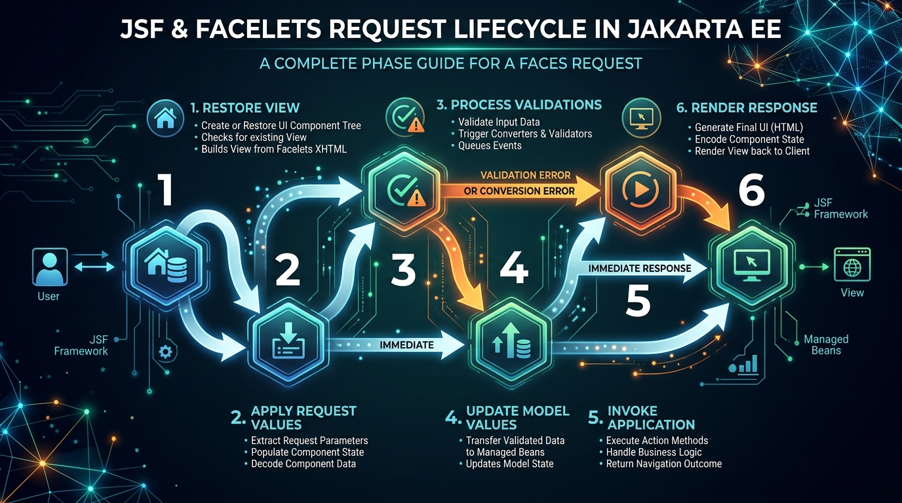

<title>Session 5 — Facelets in Jakarta Enterprise Beans</title>
<meta name="viewport" content="width=device-width, initial-scale=1">
<meta name="description" content="Session 5: Server-rendered web pages with Jakarta Faces (JSF) and Facelets, the 6-phase lifecycle, backing beans, composite components, and web resources.">
<link rel="stylesheet" href="assets/css/styles.css">
<script>window.PAGE = "s05";</script>

<main class="page">

  <h1>Session 5 · Facelets in Jakarta Enterprise Beans</h1>
  <p class="lede">So far, enterprise beans have processed business rules and data in the background.
    <strong>Jakarta Server Faces (JSF)</strong> and <strong>Facelets</strong> provide the server-side,
    component-driven presentation tier that connects human web browsers to your business logic through
    declarative XHTML views and backing beans.</p>

  <div class="callout callout--key"><span class="callout__i">🎯</span>
    <div class="callout__b"><b>Learning Objectives (from the Presenter's Manual)</b>
      <ol style="margin:.6rem 0 0;padding-left:1.2rem">
        <li>Define Facelets and Jakarta Server Faces (JSF) architecture</li>
        <li>Explain the 6 distinct phases of the Facelets request-response lifecycle</li>
        <li>Create a complete Facelet application: <code>web.xml</code> front controller, Backing Bean (<code>@Named</code>), and XHTML view</li>
        <li>Build reusable custom UI elements using Facelets Composite Components</li>
        <li>Organize and render Web Resources (CSS, JavaScript, and images) using standard JSF resource libraries</li>
      </ol>
    </div>
  </div>

  <!-- =====================================================================
       5.1 Introduction to Facelets
       ===================================================================== -->
  <span class="eyebrow">session 5.1</span>
  <h2>Part 1 · Introduction to Facelets &amp; Jakarta Server Faces</h2>

  <p><strong>Jakarta Server Faces (JSF)</strong> is a standardized, server-side UI framework built on top of the
    component-tree model. Rather than writing raw HTML strings or messy JSP scriptlets, JSF applications assemble
    pages from reusable, stateful UI components (inputs, buttons, tables) backed by Java objects.</p>

  <p><strong>Facelets</strong> is the default view declaration language for modern JSF. It replaces older, legacy
    JSP files with clean, well-formed <strong>XHTML</strong> templates.</p>

  <div class="callout callout--analogy"><span class="callout__i">🎭</span>
    <div class="callout__b"><b>The Puppet Master Analogy</b>
      Think of an HTML page in the browser as a puppet show on a stage.
      <ul style="margin:.3rem 0 0;padding-left:1.2rem">
        <li>In raw HTML/JavaScript, you manually assemble the wooden strings, paint each puppet, and move their joints yourself.</li>
        <li>In <strong>Facelets</strong>, the server maintains a live tree of actors (components). When a user clicks a button, the server updates the actor's state, runs validation, executes your Java bean method, and automatically re-renders the stage.</li>
      </ul>
    </div>
  </div>

  <h3>Key Features of Facelets</h3>
  <div class="tablewrap"><table>
    <thead><tr><th>Feature</th><th>Advantage in Enterprise Applications</th></tr></thead>
    <tbody>
      <tr><td><strong>Component-Centric</strong></td><td>UI elements manage their own rendering, state saving, and event handling.</td></tr>
      <tr><td><strong>Template Reuse</strong></td><td><code>&lt;ui:composition&gt;</code> and <code>&lt;ui:decorate&gt;</code> eliminate duplicate headers, footers, and sidebars.</td></tr>
      <tr><td><strong>Expression Language (EL)</strong></td><td><code>#{bean.property}</code> seamlessly binds view inputs to Java getter/setter methods.</td></tr>
      <tr><td><strong>Built-in Validation</strong></td><td>Automatic conversion and validation before any business method runs.</td></tr>
      <tr><td><strong>No Scriptlets</strong></td><td>Strict XML syntax prevents developers from cluttering presentation with raw Java code.</td></tr>
    </tbody>
  </table></div>

  <h3>Common Facelets Tag Library Elements</h3>
  <p>Facelets pages declare tag libraries using modern Jakarta EE namespaces (e.g., <code>xmlns:ui="jakarta.faces.facelets"</code>):</p>

  <div class="tablewrap"><table>
    <thead><tr><th>Tag</th><th>Purpose</th><th>Description</th></tr></thead>
    <tbody>
      <tr><td><code>&lt;ui:composition&gt;</code></td><td>Page template wrapper</td><td>Defines a page composition, ignoring any surrounding content outside this tag.</td></tr>
      <tr><td><code>&lt;ui:define&gt;</code></td><td>Named content block</td><td>Fills a specific placeholder defined in a master template.</td></tr>
      <tr><td><code>&lt;ui:insert&gt;</code></td><td>Template placeholder</td><td>Designates an insertion point in the master template (e.g., body, header).</td></tr>
      <tr><td><code>&lt;ui:include&gt;</code></td><td>Modular page fragment</td><td>Encapsulates and pulls in another XHTML file (like a navigation menu).</td></tr>
      <tr><td><code>&lt;ui:repeat&gt;</code></td><td>Iterative loop</td><td>Loops over a collection or list of objects to render repeated UI elements.</td></tr>
    </tbody>
  </table></div>

  <!-- =====================================================================
       5.2 The 6-Phase Request Lifecycle
       ===================================================================== -->
  <span class="eyebrow">session 5.2</span>
  <h2>Part 2 · The 6 Phases of the Facelets Request Lifecycle</h2>

  <p>Every HTTP interaction with a JSF application passes through a strictly orchestrated 6-phase lifecycle.
    Understanding these phases is essential for debugging form submissions and validation issues:</p>

  <figure>
    
    <figcaption><b>The 6 JSF Lifecycle Phases:</b> Execution phases (1–5) process incoming input; phase 6 renders the updated HTML.</figcaption>
  </figure>

  <div class="tablewrap"><table>
    <thead><tr><th>Phase #</th><th>Phase Name</th><th>What Happens in this Phase</th></tr></thead>
    <tbody>
      <tr>
        <td><strong>Phase 1</strong></td>
        <td><strong>Restore View</strong></td>
        <td>The container locates or constructs the component tree for the requested page inside <code>FacesContext</code>. For a postback, view state is restored.</td>
      </tr>
      <tr>
        <td><strong>Phase 2</strong></td>
        <td><strong>Apply Request Values</strong></td>
        <td>Each component decodes its submitted HTTP request parameters and stores the raw value locally.</td>
      </tr>
      <tr>
        <td><strong>Phase 3</strong></td>
        <td><strong>Process Validation</strong></td>
        <td>Components convert strings to types (e.g., string to double) and check validation rules. <em>If validation fails, processing jumps directly to Phase 6!</em></td>
      </tr>
      <tr>
        <td><strong>Phase 4</strong></td>
        <td><strong>Update Model Values</strong></td>
        <td>The validated local values are copied into the properties of the server-side Backing Bean.</td>
      </tr>
      <tr>
        <td><strong>Phase 5</strong></td>
        <td><strong>Invoke Application</strong></td>
        <td>The action method (e.g., <code>action="#{bean.transferFunds}"</code>) executes business logic and returns a navigation outcome.</td>
      </tr>
      <tr>
        <td><strong>Phase 6</strong></td>
        <td><strong>Render Response</strong></td>
        <td>The component tree renders itself into standard HTML and sends the HTTP response back to the browser.</td>
      </tr>
    </tbody>
  </table></div>

  <!-- =====================================================================
       5.3 Creating a Simple Facelet Application
       ===================================================================== -->
  <span class="eyebrow">session 5.3</span>
  <h2>Part 3 · Creating a Complete Facelet Application</h2>

  <p>A standard Facelet application consists of three essential building blocks: configuration descriptors,
    a backing bean, and an XHTML view.</p>

  <h3>1. Deployment Descriptors: <code>web.xml</code> and <code>beans.xml</code></h3>
  <p>The <code>FacesServlet</code> must be registered as the front controller to intercept <code>*.xhtml</code> URLs:</p>

  <div class="code-head">WEB-INF/web.xml — Faces Front Controller Registration</div>
  <pre><code>&lt;?xml version="1.0" encoding="UTF-8"?&gt;
&lt;web-app xmlns="https://jakarta.ee/xml/ns/jakartaee" version="6.0"&gt;

    &lt;servlet&gt;
        &lt;servlet-name&gt;Faces Servlet&lt;/servlet-name&gt;
        &lt;servlet-class&gt;jakarta.faces.webapp.FacesServlet&lt;/servlet-class&gt;
        &lt;load-on-startup&gt;1&lt;/load-on-startup&gt;
    &lt;/servlet&gt;

    &lt;servlet-mapping&gt;
        &lt;servlet-name&gt;Faces Servlet&lt;/servlet-name&gt;
        &lt;url-pattern&gt;*.xhtml&lt;/url-pattern&gt;
    &lt;/servlet-mapping&gt;

&lt;/web-app&gt;</code></pre>

  <div class="callout callout--key"><span class="callout__i">📌</span>
    <div class="callout__b"><b>Enable CDI: <code>WEB-INF/beans.xml</code></b>
      Remember to place an empty <code>beans.xml</code> file inside your <code>src/main/webapp/WEB-INF/</code> directory.
      Without this file, CDI annotations like <code>@Named</code> and <code>@SessionScoped</code> will not be discovered.
    </div>
  </div>

  <h3>2. The CDI Backing Bean</h3>
  <p>The backing bean holds view state and action handlers:</p>

  <div class="code-head">HelloWorldBean.java — CDI Backing Bean</div>
  <pre><code>package com.globalbank.web;

import java.io.Serializable;
import jakarta.enterprise.context.SessionScoped;
import jakarta.inject.Named;

@Named("helloWorld")          // Accessible in Facelet pages as #{helloWorld}
@SessionScoped                // Retains state throughout client session
public class HelloWorldBean implements Serializable {

    private String message = "Welcome to Jakarta Server Faces 3.0!";

    public String getMessage() { return message; }
    public void setMessage(String message) { this.message = message; }
}</code></pre>

  <h3>3. The Facelets View</h3>
  <p>XHTML document using standard JSF tags and Expression Language:</p>

  <div class="code-head">helloWorld.xhtml — Facelets View</div>
  <pre><code>&lt;!DOCTYPE html&gt;
&lt;html xmlns="http://www.w3.org/1999/xhtml"
      xmlns:h="jakarta.faces.html"&gt;
&lt;h:head&gt;
    &lt;title&gt;Jakarta Faces Demo&lt;/title&gt;
&lt;/h:head&gt;
&lt;h:body&gt;
    &lt;h1&gt;Facelet Application Response&lt;/h1&gt;
    &lt;!-- Evaluates to helloWorld.getMessage() --&gt;
    &lt;p&gt;&lt;h:outputText value="#{helloWorld.message}"/&gt;&lt;/p&gt;
&lt;/h:body&gt;
&lt;/html&gt;</code></pre>

  <!-- =====================================================================
       5.4 Composite Components & Web Resources
       ===================================================================== -->
  <span class="eyebrow">session 5.4 &amp; 5.5</span>
  <h2>Part 4 · Composite Components &amp; Web Resources</h2>

  <h3>Facelets Composite Components</h3>
  <p>Composite components allow developers to package complex UI patterns (like login boxes, credit card entry fields,
    or address forms) into reusable custom tags without writing Java renderer classes:</p>

  <div class="code-head">resources/components/loginBox.xhtml — Composite Component Definition</div>
  <pre><code>&lt;html xmlns="http://www.w3.org/1999/xhtml"
      xmlns:h="jakarta.faces.html"
      xmlns:composite="jakarta.faces.composite"&gt;

    &lt;!-- 1. Declare the component's public attribute contract --&gt;
    &lt;composite:interface&gt;
        &lt;composite:attribute name="usernamePrompt" default="Username:"/&gt;
        &lt;composite:attribute name="buttonLabel" required="true"/&gt;
    &lt;/composite:interface&gt;

    &lt;!-- 2. Provide the implementation layout --&gt;
    &lt;composite:implementation&gt;
        &lt;div class="login-panel"&gt;
            &lt;h:outputLabel value="#{cc.attrs.usernamePrompt}" /&gt;
            &lt;h:inputText id="usr" /&gt;
            &lt;h:commandButton value="#{cc.attrs.buttonLabel}" /&gt;
        &lt;/div&gt;
    &lt;/composite:implementation&gt;
&lt;/html&gt;</code></pre>

  <h3>Standardized Web Resources</h3>
  <p>Jakarta Faces provides built-in resource handling for static assets placed under the <code>/resources/</code> folder:</p>

  <div class="tablewrap"><table>
    <thead><tr><th>Asset Type</th><th>Disk Location</th><th>Facelets Tag in XHTML</th></tr></thead>
    <tbody>
      <tr>
        <td><strong>CSS Stylesheet</strong></td>
        <td><code>/resources/css/style.css</code></td>
        <td><code>&lt;h:outputStylesheet library="css" name="style.css"/&gt;</code></td>
      </tr>
      <tr>
        <td><strong>JavaScript</strong></td>
        <td><code>/resources/js/app.js</code></td>
        <td><code>&lt;h:outputScript library="js" name="app.js"/&gt;</code></td>
      </tr>
      <tr>
        <td><strong>Image Asset</strong></td>
        <td><code>/resources/images/logo.png</code></td>
        <td><code>&lt;h:graphicImage library="images" name="logo.png"/&gt;</code></td>
      </tr>
    </tbody>
  </table></div>

  <!-- Interactive Simulation Bench -->
  <div class="bench" data-run="canned">
    <div class="bench__head">
      <span class="dot"></span>
      <span class="kind">interactive simulation</span>
      <span class="mode">JSF 6-Phase Lifecycle Replay</span>
    </div>
    <pre class="bench__code"><code>// Client clicks "Register Student" on student_registration.xhtml
POST /student_registration.xhtml
Payload: { firstName: "Sarah Connor", age: "28" }
// FacesServlet intercepts and executes the 6-phase pipeline</code></pre>
    <div class="bench__controls">
      <button class="btn-run" type="button">Simulate Postback Lifecycle</button>
      <span class="bench__hint">Walks through all 6 phases of request decoding, validation, and rendering.</span>
    </div>
    <script type="text/plain" class="bench__canned">
[07:42:01,100] [Phase 1: Restore View] Found view ID '/student_registration.xhtml'. Reconstituted UIComponent tree.
[07:42:01,103] [Phase 2: Apply Request Values] Decoded parameters -> firstName="Sarah Connor", age="28".
[07:42:01,106] [Phase 3: Process Validation] Ran IntegerConverter on '28' -> 28. Validated @NotNull & @Size constraints -> PASSED.
[07:42:01,109] [Phase 4: Update Model Values] Populated backing bean StudentBean -> setFirstName("Sarah Connor"), setAge(28).
[07:42:01,112] [Phase 5: Invoke Application] Called #{studentBean.registerStudent()} -> EJB persistence complete. Navigation: null (stay).
[07:42:01,117] [Phase 6: Render Response] Serialized UIComponent tree into standard HTML5. HTTP 200 OK sent to browser.
    </script>
    <pre class="bench__out" aria-live="polite"></pre>
  </div>

  <!-- =====================================================================
       Knowledge Check Quiz
       ===================================================================== -->
  <span class="eyebrow">check yourself</span>
  <section class="quiz" data-quiz>
    <h3>Session 5 · Knowledge Check</h3>
    <script type="application/json">
    [
      {
        "q": "What is the primary view declaration language for modern Jakarta Server Faces?",
        "opts": [
          "JavaServer Pages (JSP)",
          "Facelets (XHTML)",
          "Thymeleaf",
          "PHP"
        ],
        "a": 1,
        "why": "Facelets is the official default view declaration language for JSF, utilizing XML/XHTML templates instead of legacy JSP."
      },
      {
        "q": "If user input validation fails during Phase 3 (Process Validation), what does JSF do next?",
        "opts": [
          "It crashes the server",
          "It skips straight to Phase 6 (Render Response) to re-display the form with error messages",
          "It commits the data to the database anyway",
          "It re-prompts the user with an alert box"
        ],
        "a": 1,
        "why": "When validation fails, JSF bypasses Update Model Values and Invoke Application, immediately rendering the response with error messages."
      },
      {
        "q": "Which servlet class acts as the Front Controller for all JSF requests in web.xml?",
        "opts": [
          "jakarta.servlet.http.HttpServlet",
          "jakarta.faces.webapp.FacesServlet",
          "jakarta.ejb.EJBContainerServlet",
          "jakarta.faces.Dispatcher"
        ],
        "a": 1,
        "why": "FacesServlet is the core front-controller servlet specified in web.xml to dispatch JSF requests."
      },
      {
        "q": "Where should static web assets (CSS, JS, images) be stored by default in a Jakarta Faces application?",
        "opts": [
          "/WEB-INF/static/",
          "/resources/",
          "/META-INF/assets/",
          "/root/"
        ],
        "a": 1,
        "why": "JSF standardizes web resource lookups inside the web application's root /resources/ directory."
      },
      {
        "q": "Which Facelets tag is used to create an insertion placeholder in a master template?",
        "opts": [
          "<ui:insert>",
          "<ui:define>",
          "<ui:composition>",
          "<ui:include>"
        ],
        "a": 0,
        "why": "<ui:insert> marks a placeholder in the master template that child compositions populate via <ui:define>."
      }
    ]
    </script>
  </section>

  <!-- =====================================================================
       Summary
       ===================================================================== -->
  <span class="eyebrow">recap</span>
  <h2>One-Line Summary</h2>
  <div class="tablewrap summary"><table><tbody>
    <tr><td><strong>Facelets</strong></td><td>XML/XHTML view declaration language for Jakarta Server Faces (JSF).</td></tr>
    <tr><td><strong>Backing Bean</strong></td><td>CDI bean (<code>@Named</code>, <code>@SessionScoped</code>) binding form components to Java logic.</td></tr>
    <tr><td><strong>6 Phases</strong></td><td>Restore View → Apply Values → Validate → Update Model → Invoke App → Render Response.</td></tr>
    <tr><td><strong>Validation Short-circuit</strong></td><td>Failed validation in Phase 3 skips immediately to Phase 6 with error messages.</td></tr>
    <tr><td><strong>Web Resources</strong></td><td>Managed CSS/JS/images located in <code>/resources/</code> and loaded via <code>&lt;h:outputStylesheet&gt;</code>.</td></tr>
  </tbody></table></div>

</main>

<script src="assets/js/course.js"></script>
<script src="assets/js/runner.js"></script>
